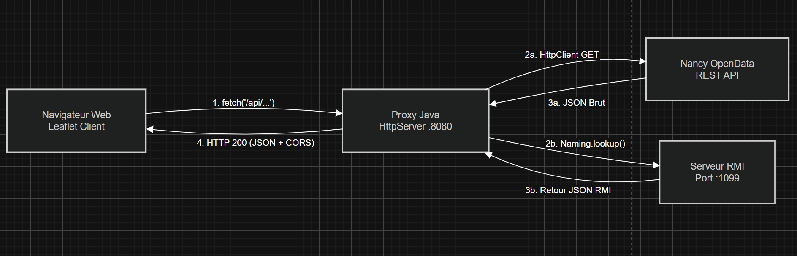
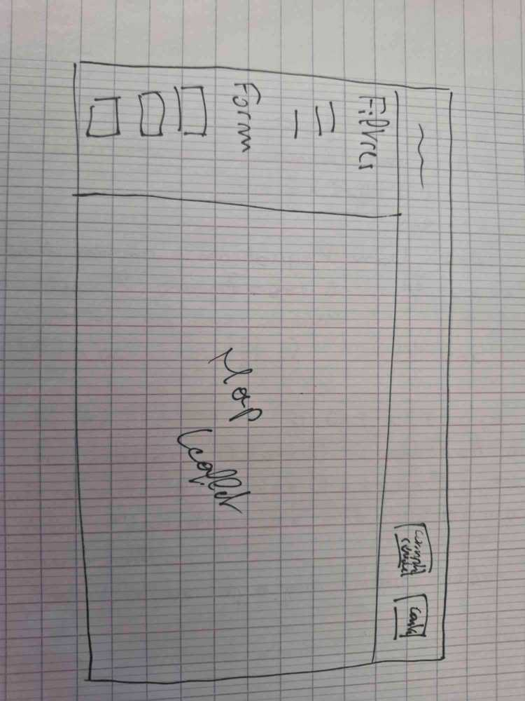

Comptes Rendus — Projet Application Répartie
1. Architecture du Proxy Web / RMI
L'objectif de cette implémentation est de fournir une interface unique et sécurisée (un point d'entrée central) pour une application web front-end (carte Leaflet), en contournant les restrictions de sécurité des navigateurs (CORS) et en unifiant des sources de données hétérogènes (API REST externes et services RMI internes).

1.1 Le Serveur Central (Le "Chef d'Orchestre")
Fichier associé : ServeurProxy.java
Le cœur du système repose sur la classe native HttpServer de Java. Ce serveur agit comme un routeur d'aiguillage. Son rôle est strictement limité à l'écoute sur le port 8080 et à la distribution des requêtes entrantes vers les contrôleurs appropriés.
- /api/incidents : Récupération des travaux (Open Data) via
IncidentsHandler - /api/restaurants : Liste globale des restaurants via
RestaurantHandler - /api/tables : Liste des tables disponibles via
TablesHandler - /api/liste-reservations : Historique des réservations via
ListeReservationHandler - /api/reservations : Création d'une réservation via
ReservationHandler
Cette séparation stricte garantit un code maintenable et permet à plusieurs développeurs de travailler en parallèle sur différentes routes sans générer de conflits Git complexes.
1.2 Les Handlers (Les "Contrôleurs")
Chaque route est gérée par une classe implémentant l'interface HttpHandler. Ces classes ont trois responsabilités majeures :
- La gestion de la sécurité (CORS) : Elles injectent systématiquement les en-têtes
Access-Control-Allow-Origin: *. - Le traitement des paramètres : Extraction de la chaîne de requête (Query String) et conversion en données typées.
- La gestion des erreurs : Les blocs
try/catchgarantissent un code HTTP approprié (ex: 400 ou 500) accompagné d'un message JSON propre.
1.3 Le Service de Données (Le "Moteur")
Fichier associé : OpenData.java. Cette classe masque la complexité des protocoles en gérant deux flux distincts :
- HTTP (Vélos/Travaux) : Utilise
HttpClientpour interroger l'API de Nancy. Parse la réponse avecorg.jsonet extrait la chaînepolylineenlatitudeetlongitude. - RMI (Restaurants) : Contacte l'annuaire local sur le port
1099viaNaming.lookup()et appelle de manière transparente les méthodes de l'interface partagée.
2. Partie RMI et Réservation de Restaurant
Java RMI permet à deux programmes Java, s'exécutant sur des machines différentes, de s'appeler mutuellement. Le serveur proxy appelle une méthode Java, et RMI se charge de la sérialisation, la transmission, et l'exécution sur le véritable objet cible.
Du point de vue du code appelant, la complexité réseau est invisible. L'appelant travaille avec un stub obtenu en interrogeant le registre RMI (port 1099).
2.1 Organisation du code RMI
Le code RMI est structuré en quatre couches distinctes :
┌────────────────────────────────────────┐
│ Interfaces Distantes (Contrat) │
└───────────────────┬────────────────────┘
▼
┌────────────────────────────────────────┐
│ Implémentations │
└───────────────────┬────────────────────┘
▼
┌────────────────────────────────────────┐
│ Services Appli (Logique) │
└───────────────────┬────────────────────┘
▼
┌────────────────────────────────────────┐
│ Couche DAO (Données) │
└────────────────────────────────────────┘
2.2 Les interfaces distantes
- ServiceRestaurant : Déclare
getRestaurants(),getTables(),creerReservation()etgetReservations(). Le choix de retourner des chaînes JSON rend le proxy indépendant des types métier. - ServiceDistributeur : Gère l'enregistrement centralisé (check-in) via
enregistrerClient().
2.3 Démarrage des serveurs RMI
Step 1: [LancerServiceCentral] (Port 1099)
-> Crée le registre & Publie "RMI.rmi.ServiceCentral"
▲
Step 2: [LancerServiceRestaurant] ──┘
-> S'enregistre auprès du Central (Check-in)
2.4 Flux Frontend & Formulaire
- Interception : Le JS intercepte la soumission, encode les valeurs et effectue un
fetch()en GET vers le proxy. - Traitement RMI : Le proxy invoque
creerReservation()sur le stub. Le serveur métier instancie la réservation, puis la couche DAO effectue l'insertion transactionnelle. - Notification UX : Une notification (verte ou rouge) s'affiche dynamiquement sans bloquer l'interface via
alert().
3. Couche d'Accès aux Données (BDD)
Cette partie constitue le fondement de la persistance des données et de leur manipulation sécurisée sous Oracle.
3.1 Modélisation de la Base de Données
- Clients : ID, Nom, Prénom, Numéro de Téléphone. (Note : Le numéro de téléphone est stocké en String pour préserver les zéros initiaux et éviter les erreurs d'octal Java).
- Restaurants : Contient les détails des établissements (ID, Nom, Adresse, Coordonnées géographiques).
- Tables : Représente les tables au sein des restaurants (ID, ID du Restaurant, Numéro de Table, Nombre de Places). Une clé étrangère (`IDRES`) lie chaque table à un restaurant, assurant l'intégrité référentielle.
- Réservations :Enregistre les réservations effectuées (ID, ID du Client, ID de la Table, Nombre de Convives, Durée, Date et Heure de la Réservation). Des clés étrangères (`IDCLI`, `IDTAB`) lient les réservations aux clients et aux tables.
3.2 Modèle Transactionnel
La gestion des transactions est un pilier fondamental pour garantir la cohérence et l'intégrité des données, surtout dans un environnement où plusieurs opérations peuvent être effectuées simultanément ou en cascade.
- Transactions Atomiques : Chaque opération de modification de la base de données (ajout, mise à jour, suppression) est conçue pour être atomique. Cela signifie que soit toutes les étapes de l'opération sont complétées avec succès (transaction
COMMIT), soit aucune ne l'est (transactionROLLBACK). Cette approche prévient les états incohérents de la base de données en cas d'erreur ou d'interruption. - Détection de Conflits de Réservation : Un mécanisme spécifique a été mis en place dans la méthode
addReservationde la classeRequetepour prévenir les chevauchements de réservations sur une même table via une requête SQL de vérification préalable.
Front-End
Le Front-End de l'application a été conçu de manière native (Vanilla JavaScript, HTML5, CSS3).
4.1 Architecture Globale et Choix Techniques
LLes technologies clés utilisées sont :
- Leaflet.js & OpenStreetMap : Moteur cartographique open-source léger pour l'affichage et la manipulation de la carte interactive.
- Fetch API : Utilisation native des promesses JavaScript pour la communication asynchrone avec les différentes API.
- CSS
4.2 Interface Utilisateur
L'interface a été pensée pour être intuitive et diviser clairement l'information. La Direction Artistique s'appuie sur une palette de couleurs stricte définie via des variables CSS.
- La page principale : Divisée via
Flexboxentre un panneau latéral contenant les actions utilisateur (formulaire, légende, filtres) et un conteneur dynamique pour la carte. - La page des réservations : Utilise
CSS Gridpour afficher de manière adaptative une liste de cartes d'information, générant automatiquement autant de colonnes que l'écran le permet.
4.3 Gestion de la Carte Interactive et des Marqueurs
La carte interactive est le cœur de l'application. Sa gestion a été optimisée pour éviter les surcharges visuelles :
- Personnalisation des icônes : Les marqueurs sont générés en HTML/CSS directement par Leaflet (
L.divIcon) et ainsi respecter les couleurs choisie pour le site. - Filtres dynamiques : Les marqueurs sont rangés dans des calques invisibles (
Layer Groups). Cela permet d'afficher ou masquer des catégories entières sans refaire de requêtes réseau. - Popups : Chaque marqueur possède une bulle d'information générée au clic, combinant du texte, des données et des boutons d'action.
4.4 Utilisation des API
Le Front-End centralise les données provenant de multiples sources de manière asynchrone afin de ne jamais bloquer l'interface utilisateur.
- Vélos : Utilisation de l'API publique GBFS (Cyclocity). Ainsi le front-end télécharge et fusionne ces deux fichiers : les données géographiques fixes (
station_information) et les disponibilités en temps réel (station_status). - Backend REST : Communication avec le serveur Proxy Java local pour récupérer les incidents, restaurants et tables.
- Optimisation (Promise.all) : Téléchargement en parallèle des restaurants et des tables pour éviter la surcharge réseau, puis croisement des données en mémoire côté client.
4.5 Logique Métier et Expérience Utilisateur
La logique JavaScript a été séparée en plusieurs fichiers (un par page) pour éviter les erreurs d'exécution sur des éléments HTML inexistants et rendre le code maintenable.
- Pré-remplissage du formulaire : Un bouton "Choisir" dans le popup de la carte permet d'injecter automatiquement l'ID de la table et les couverts dans le formulaire de réservation.

Ce schéma illustre la conception initiale de la page index.html.